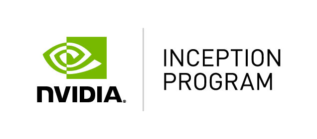
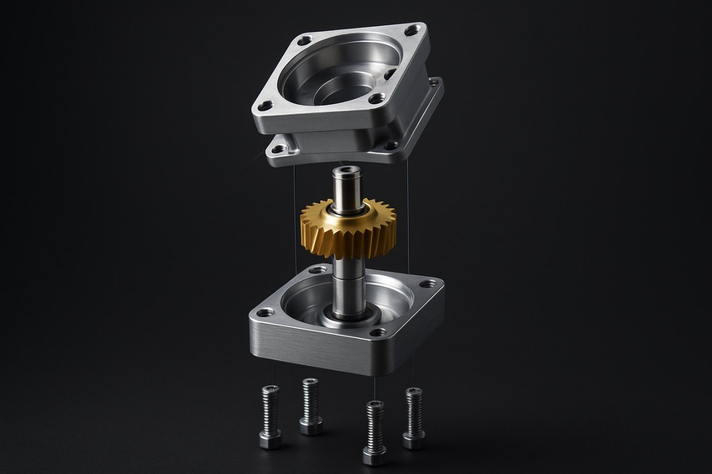
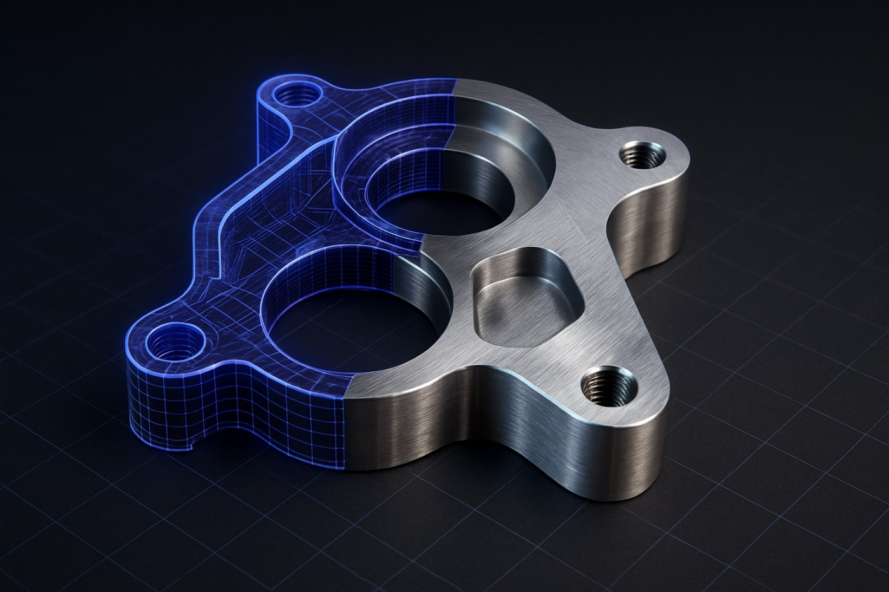
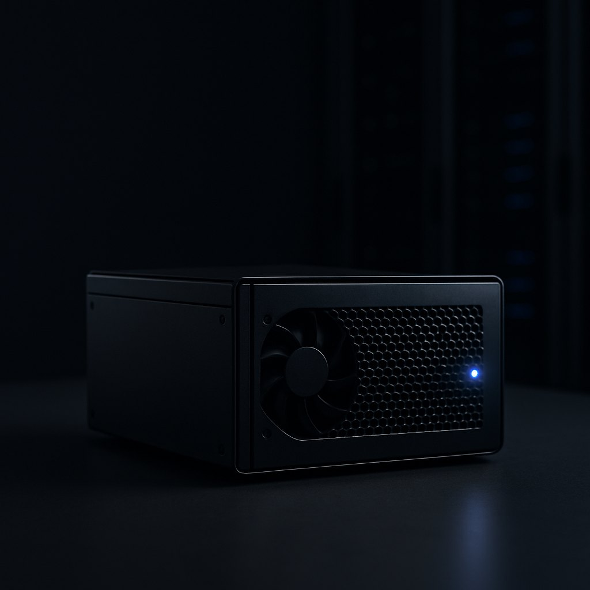
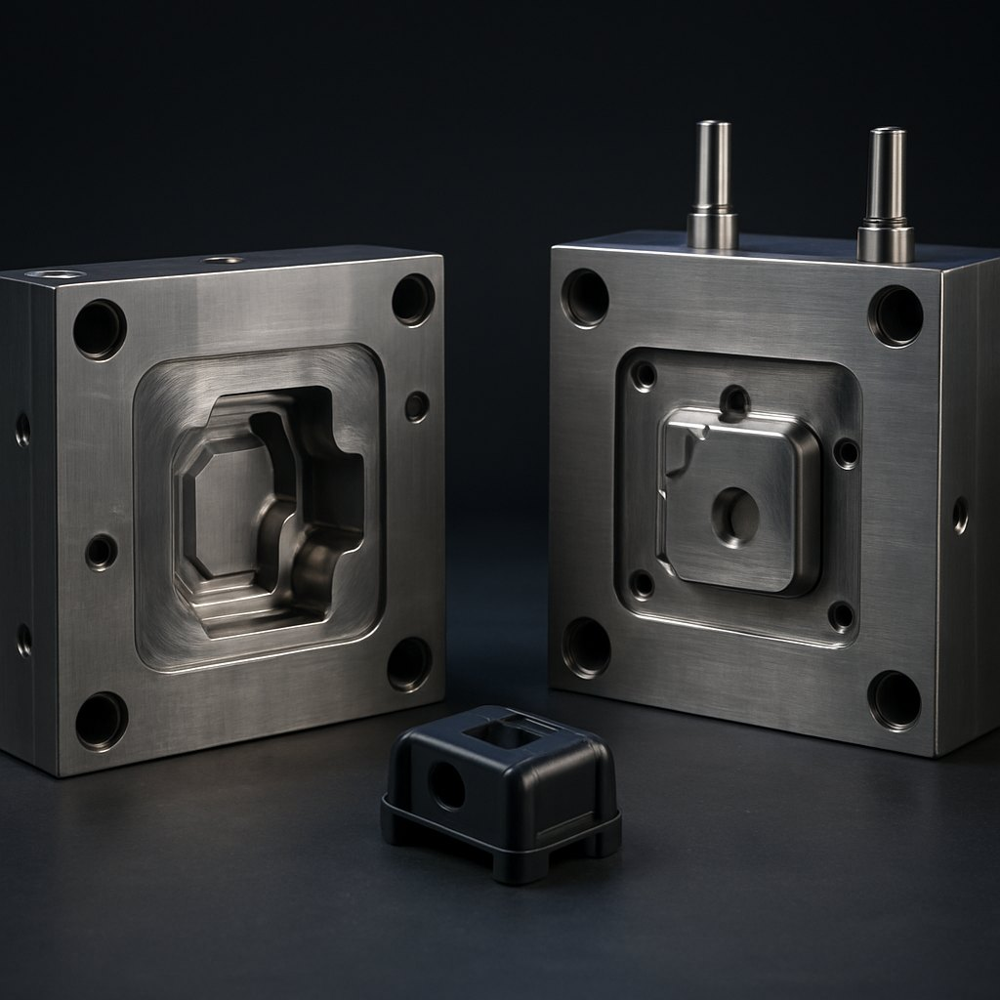

함께해 온 파트너

Samsung C-Lab DREAM PLASTIC
DREAM PLASTIC
한 줄의 설명, 한 장의 이미지, 또는 가지고 계신 3D·CAD 파일이 링크와 조인트로 구조화된 자산이 됩니다. 접촉면을 실측해 축과 가동범위를 판정하고, 충돌체·질량까지 만들어 USD·URDF·MJCF로 내보냅니다. 시뮬레이터가 바로 실행할 수 있는 상태로.


Samsung C-Lab
DREAM PLASTIC
컨셉 목업을 만들기 위한 반복 모델링, 회의용 형상 검토 데이터 준비, 스캔·이미지의 수작업 역설계. 판단이 아니라 준비에 쓰는 시간입니다. VRINGON CAD는 이 구간을 분 단위로 줄입니다.
프롬프트 한 줄, 또는 이미지·스케치 한 장. AI가 치수까지 계산한 설계 사양으로 3D를 만듭니다.
하우징·커버·체결부품이 처음부터 분리된 조립 구조로 나옵니다. 분해·조립 모션으로 바로 확인합니다.
접촉면을 실측해 링크 계층과 회전·직선·고정 조인트를 판정하고, 가동범위까지 스윕으로 구합니다. 신뢰도가 낮은 항목은 검토를 요청합니다.
충돌체·질량을 생성하고 시뮬레이션 스윕과 포맷 왕복을 검사한 뒤 USD·URDF·MJCF·STEP으로 내보냅니다.
생성 결과는 단일 메시가 아니라 파트 트리입니다. 파트별 선택·이동·재질 변경, 분해/조립 애니메이션까지 뷰어에서 바로 다룹니다.

파트별 솔리드를 유지한 STEP(AP214)과 레이어가 분리된 DXF로 변환합니다. SolidWorks·CATIA·NX·Creo에서 바로 열립니다.
"리브를 3개로, 벽 두께 3mm로"라고 쓰면 수정 요청이 파라미터 변경으로 번역되어 즉시 반영됩니다. 파트를 선택하면 그 파트만 편집됩니다.
조인트 타입·축·가동범위를 항목별 신뢰도와 판정 근거와 함께 제시합니다. 사용자가 확정하면 그 즉시 검증이 다시 돌고, 수정 이력은 학습 데이터가 됩니다.
테셀레이션 3단계와 감축률 조절로, 시각화용 경량 메시부터 정밀 데이터까지 한 모델에서 뽑습니다.
치수가 기입된 2D 도면을 올리면 Ø·R·t 기호와 투상도를 읽어 그 수치로 3D를 세웁니다. 손스케치는 실루엣과 비례를 따릅니다.
파트를 분리하고 접촉면을 실측해 회전축·직선축·고정을 판정합니다. 가동범위는 부모와 간섭이 시작되는 지점까지 실제로 스윕해서 구합니다.
충돌체와 질량·관성을 시각 메시와 분리해 생성하고, 시뮬레이션 스윕과 포맷 왕복 검증을 통과한 자산만 준비도 점수와 함께 내보냅니다.
VRINGON CAD는 고객사 인프라에 설치되는 온프레미스 소프트웨어입니다. 생성·편집·변환 전 과정이 사내망 안에서 수행되고, 폐쇄망(에어갭) 구성까지 지원합니다. 귀사의 인프라, 귀사의 규칙 안에서만 동작합니다.

VRINGON CAD는 기존 도구를 대체하지 않습니다. 초기 형상을 만들어 표준 포맷으로 넘기는 앞단 도구로, SolidWorks · CATIA · NX · Creo · Fusion 어디서든 결과물이 바로 열립니다.
파트별 솔리드가 유지되는 표준 교환 포맷. CAD·CAM·CAE 어디서든 사용.
파트별 레이어가 분리된 도면 연동용 포맷.
시각화·협업툴·3D 프린팅용 메시 포맷. 파트 계층 그대로.

필요한 고객사에는 생성된 설계 데이터를 기반으로 금형 설계 검토, 사출 공정 최적화, 그리고 검증된 생산 파트너 연결까지 지원합니다. 소프트웨어에서 만든 데이터가 실제 양산으로 이어지도록 돕는 선택 사양입니다.
Contact us네. VRINGON CAD는 고객사 서버에 설치하는 온프레미스 방식이 기본입니다. 설치 후 모든 생성·변환 연산은 고객사 인프라 안에서 수행되며, 필요 시 사내 클라우드(VPC) 구성도 협의 가능합니다.
온프레미스 설치 환경에서 설계 데이터는 고객사 네트워크를 벗어나지 않습니다. 당사는 고객사 데이터에 접근하지 않으며, 모델 학습에도 사용하지 않습니다. 이 조건은 계약서에 명시됩니다.
정보보안 경영시스템 ISO/IEC 27001과 AI 경영시스템 ISO/IEC 42001을 확보한 프로세스로 개발·운영됩니다. 인증 적용 범위와 보안 통제 항목은 보안 검토 자료로 제공해 드립니다.
네. 외부 통신 없이 동작하도록 설계되어 있으며, 모델과 업데이트는 오프라인 패키지로 반입합니다. 폐쇄망 반입 절차는 고객사 보안 규정에 맞춰 진행합니다.
생성 결과를 STEP·DXF 등 표준 포맷으로 내보내 SolidWorks, CATIA, NX, Creo 등에서 그대로 열어 작업합니다. 기존 CAD를 대체하는 것이 아니라 초기 형상을 만들어 넘기는 앞단 도구입니다.
VRINGON CAD로 생성한 형상 데이터의 권리는 고객사에 귀속됩니다. 당사는 생성물에 권리를 주장하지 않으며 상업적 이용에 제약을 두지 않습니다. 다만 입력 자료가 제3자의 권리를 침해하지 않아야 합니다.
추론용 GPU 서버 1대(예: RTX 4090급 이상 또는 A100/H100)부터 시작할 수 있습니다. 동시 사용자 수와 처리량에 따라 구성이 달라지므로, 사용 시나리오를 알려주시면 권장 사양을 산정해 드립니다. 기존 사내 GPU 서버 활용도 가능합니다.
실제 설계 과제를 대상으로 사양 검토 → 설치 → 과제 수행 → 결과 리뷰 순서로 진행합니다. 파일럿 결과 보고서에 소요 시간과 산출물 품질을 함께 정리해 드리며, 기간과 조건은 과제 범위에 따라 협의합니다.